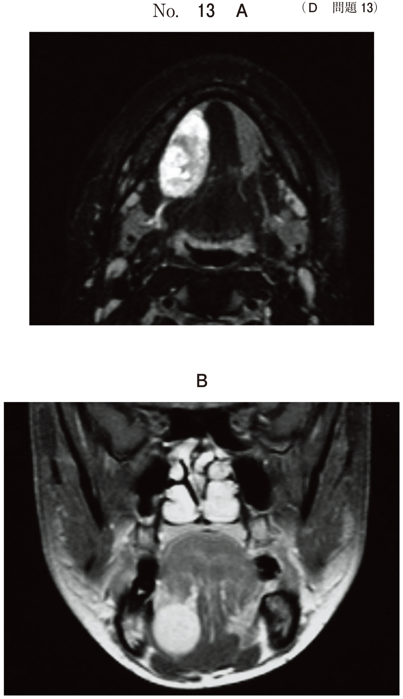
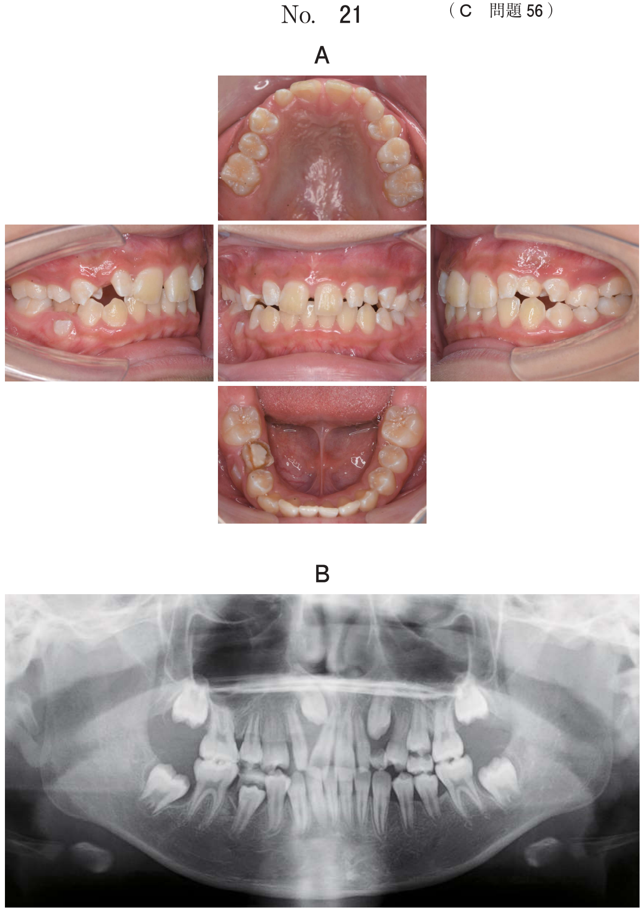

上顎前突
上顎前突とは
上顎前歯が下顎前歯に対して前方に位置する不正咬合。Angle II級に分類される。
原因による分類
| 分類 | 原因 | セファロ所見 |
|---|---|---|
| 骨格性 | 上顎過成長 or 下顎劣成長 | SNA大 or SNB小 |
| 歯槽性（機能性） | 前歯の傾斜異常 | ANB正常範囲内 |
AngleⅡ級1類 vs Ⅱ級2類
| 項目 | II級1類 | II級2類 |
|---|---|---|
| 上顎前歯傾斜 | 唇側傾斜（前突） | 舌側傾斜 |
| オーバージェット | 大きい | 小さい |
| オーバーバイト | 正常〜小 | 大きい（過蓋咬合） |
| Interincisal angle | 小さい | 大きい |
| 呼吸様式 | 口呼吸 | 鼻呼吸 |
| 口唇閉鎖 | 不全 | 正常 |
- 1類：上顎前歯が唇側傾斜（前に出てる）→ オーバージェット大、口呼吸
- 2類：上顎前歯が舌側傾斜（後ろに倒れてる）→ 過蓋咬合
骨格性Ⅱ級を示す症候群
下顎劣成長により骨格性Ⅱ級（上顎前突）を示す。
| 症候群 | 特徴 |
|---|---|
| Robin シークエンス | 下顎劣成長、舌根沈下（気道閉塞リスク） |
| Treacher Collins | 下顎劣成長、眼裂の外下方傾斜、耳奇形 |
※Crouzon、Apert、唇顎口蓋裂は上顎劣成長 → 反対咬合
治療装置の選択
原因別の治療装置
| 原因 | セファロ所見 | 治療装置 |
|---|---|---|
| 上顎過成長 | SNA大 | ヘッドギア |
| 下顎劣成長 | SNB小 | 機能的矯正装置（アクチバトール、バイオネーター、Fränkel装置）、咬合斜面板 |
| 機能性（歯槽性） | ANB正常 | 機能的矯正装置 |
ヘッドギアの種類
| 種類 | 牽引方向 | 適応 |
|---|---|---|
| サービカルプル | 後下方 | ローアングル（FMA小） |
| ハイプル | 後上方 | ハイアングル（FMA大）、開咬 |
| ストレートプル | 後方 | ノーマルアングル |
- SNA大（上顎過成長）→ ヘッドギアで上顎成長抑制
- SNB小（下顎劣成長）→ 機能的矯正装置で下顎成長促進
- 成長期を過ぎた場合 → 外科的矯正治療
過去問
AngleⅡ級2類の所見で正しいのはどれか。2つ選べ。
b 口唇閉鎖不全
c コンケイブタイプの側貌
d 上顎中切歯の舌側傾斜
【解説】II級2類の特徴は過蓋咬合と上顎中切歯の舌側傾斜。口唇閉鎖不全はII級1類の特徴。コンケイブタイプはIII級の側貌。
AngleのⅡ級1類と比較したAngleのⅡ級2類の不正咬合の特徴はどれか。2つ選べ。
b オーバーバイトが小さい。
c lnterincisal angleが大きい。
d オーバージェットが小さい。
e FH平面に対する上顎中切歯歯軸傾斜角が大きい。
【解説】II級2類はInterincisal angleが大きい（上顎前歯舌側傾斜）、オーバージェットが小さい。口呼吸・オーバーバイト小・歯軸傾斜角大はII級1類の特徴。
骨格性Ⅱ級を示すのはどれか。1つ選べ。
b Apert 症候群
c Crouzon 症候群
d Robin シークエンス
e Beckwith-Wiedemann 症候群
【解説】Robin シークエンスは下顎劣成長により骨格性Ⅱ級（上顎前突）を示す。唇顎口蓋裂・Apert・Crouzonは上顎劣成長で骨格性Ⅲ級（反対咬合）。Beckwith-Wiedemannは巨舌による開咬。
7歳の女児。前歯の歯並びが悪いことを主訴として来院した。初診時の顔面写真（別冊No.22A）と口腔内写真（別冊No.22B）とを別に示す。セファロ分析の結果を図に示す。
適切な矯正装置はどれか。1つ選べ。


b リンガルアーチ
c アクチバトール
d ハイプルヘッドギア
e サービカルプルヘッドギア
【解説】セファロでSNA大（上顎過成長）、ローアングルの場合はサービカルプルヘッドギア（後下方牽引）が適応。ハイプルはハイアングル・開咬に用いる。
9歳の女児。口が閉じにくいことを主訴として来院した。診断をした結果、矯正歯科治療を行うこととした。初診時の顔面写真（別冊No.34A）、口腔内写真（別冊No.34B）及びエックス線画像（別冊No.34C）を別に示す。セファロ分析の結果を図に示す。
適切な矯正装置はどれか。1つ選べ。


b ヘッドギア
c Herbst装置
d バイオネーター
e リップバンパー
【解説】「口が閉じにくい」＝口唇閉鎖不全（II級1類の特徴）。セファロでSNA大（上顎過成長）を示す場合、ヘッドギアで上顎成長抑制を行う。